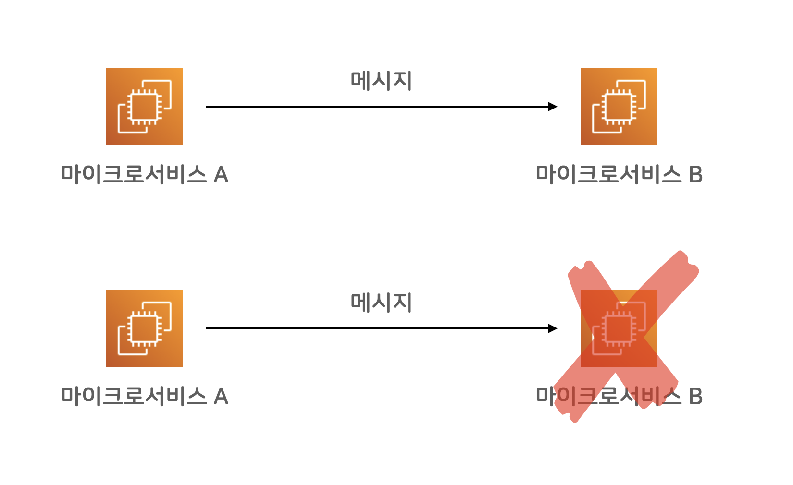
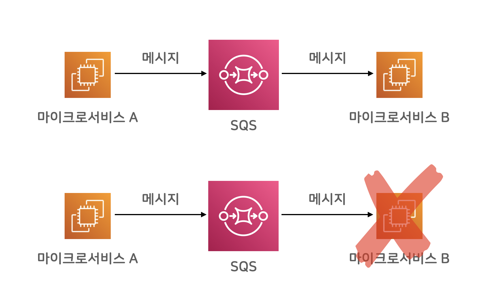
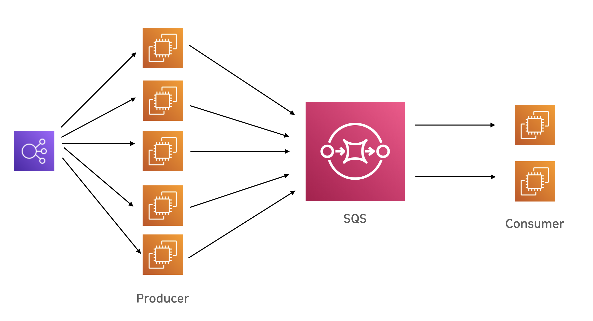

2022년 8월 1일
Amazon Simple Queue Service(SQS)는 마이크로 서비스, 분산 시스템 및 서버리스 애플리케이션을 쉽게 분리하고 확장할 수 있도록 지원하는 완전관리형 메시지 대기열 서비스입니다. SQS는 메시지 중심 미들웨어를 관리하고 운영하는 데 따른 복잡성과 오버헤드를 없애고 개발자가 차별화 작업에 집중할 수 있도록 지원합니다. SQS를 사용하면 메시지 손실 위험을 감수하거나 다른 서비스를 가동할 필요 없이 소프트웨어 구성 요소 간에 모든 볼륨의 메시지를 전송, 저장 및 수신할 수 있습니다. AWS 관리 콘솔, 명령줄 인터페이스 또는 원하는 SDK, 3가지 간단한 명령을 사용하여 몇 분 만에 SQS를 시작할 수 있습니다.
공식 홈(https://aws.amazon.com/ko/sqs)에 있는 설명입니다. 말이 조금 어렵게 느껴지지만, 정확하게 적혀 있습니다. 이하, 친절한 설명 덧붙여보겠습니다.
Amazon SQS는 AWS에서 운영해주는 메시지 큐 서비스입니다. 메시지 큐 서비스(또는 메시지 브로커)는, 소프트웨어 시스템 사이에 메시지를 주고받을 수 있는 믿을만한 우체국 시스템이라고 볼 수 있습니다.
핸드폰 통화 연결과, 카카오톡 메시지 연결의 차이로 비유해봐도 될 것 같습니다. 핸드폰 통화 연결은, 즉각적인 대화를 할 수 있습니다만, 당연히도, 통화 당사자 두 명이 둘 다 깨어있고 대화에 집중해야 합니다. (대화에 집중 안 하는 상대도 많다는 점은 논외로 합시다) 한 명이라도 잠든 상태라면 통화 연결이 되지 않을 테고, 대화 진행이 되지 않겠죠.
카카오톡 메시지의 경우에는, 한 명이 운전 중이거나 하는 이유로 잠시 연결이 되지 않더라도, 메시지를 보낸 사람이 메시지를 보내고 다른 일을 하고 있을 수 있고, 받은 사람은 운전을 다 하고 나서, 메시지를 확인한 다음 응답할 수 있습니다.
마이크로 서비스 사이에 메시지 전달을 이어주는 카카오톡이 메시지 큐라고 보면 이해하기 쉬울 것 같습니다. 메시지 큐는 일반적으로 장애에 대한 내성이 (대단히) 높고, 메시지를 안전하게 저장해서 유실되지 않게 보장해 주곤 합니다. 일단 성공적으로 메시지를 큐에 넣었다면, (거의) 반드시 수신자에게 전달된다고 믿을 수 있습니다.

백엔드 마이크로 서비스 A와 B가 통신을 해야 하는 상황에, 보통의 네트워크 통신을 한다면, 즉각적으로 결과를 확인해가며 동기식(synchronous)으로 통신할 수 있습니다만, 대신 A나 B 둘 중 하나만 문제 상황을 만나더라도 전체 시스템이 실패하는 문제가 있습니다.
위 그림에서 보자면, 서비스 B에 장애가 발생하면, 해당 메시지를 주고받아야 했던 상황 전체가, 시스템 차원에서 실패한 꼴이 됩니다. 서비스 A는 문제없이 정상이었는데도 말이죠. A 입장에서는 억울한 상황입니다.

마이크로 서비스 사이 중간에 메시지 큐 서비스를 활용해 통신하면, 메시지 송수신 채널을 유연하게 연결할 수 있습니다. 중간에 메시지 브로커가 안전하고 유연한 버퍼 역할을 해주어서, 메시지를 발송하는 쪽에서는 메시지 수신부가 정상적인지 아닌지 큰 걱정 없이 메시지를 보내고 다른 일을 할 수 있습니다.
마이크로 서비스 B에서 일시적인 문제가 발생했다고 하더라도, 마이크로 서비스 A에서는 정상적으로 메시지를 브로커에 보낼 수 있고, B입장에서는, 다시 정상 작동하는 시점에 메시지를 가져올 수 있습니다. 잠깐의 장애 상황에 대해서 대응할 수 있는 여력이 생긴 거죠.
참고로, 메시지 브로커 서비스는, 다중화 구성을 기본으로 장애 걱정 없이 믿을 만한 시스템으로 구축합니다. 브로커 시스템 일부에 장애가 발생하더라도, 브로커 시스템 전체로 보자면 정상 작동하도록 믿을 수 있는 높은 신뢰도를 바탕으로 운영됩니다. 각자 갖고 있는 스마트폰이 물에 빠지거나 문제가 생길지언정, 카카오톡 서버가 메시지를 유실했다고 생각하기 쉽지 않은 것처럼요.
메시지를 보내는 쪽을 프로듀서(producer)라고 부르고, 받아서 사용하는 쪽을 컨슈머(consumer)라고 부릅니다.
메시지 큐 시스템을 자체 인프라에 운영하던 시절에는 오픈 소스 프로젝트로 RabbitMQ가 널리 활용됐었는데요, 클라우드 환경으로 넘어가고, 게다가 AWS에서 책임지고 운영해주는 SQS 같은 브로커 시스템이 등장하면서, 훨씬 더 편리해진 것 같습니다. AWS에서 책임지고 믿을만하게 운영해주기 때문에, 우리는 브로커 운영 부담은 전혀 없이, 각자 개발하는 시스템에서 메시지만 보내고 받아도 되게 된 거죠.

SQS 시스템은 확장성이 매우 뛰어난 브로커 역할을 합니다. 예를 들어, 고객의 요청을 받은 ELB 로드밸런서가, 웹 서비스들로 부하를 분산시켜주고, 각각의 웹 서비스 인스턴스들이 각자 맘 편히 SQS 큐에 메시지를 쌓고, 뒷 단에서 메시지를 처리하는 마이크로 서비스가 묵묵히 자기 일을 하는 식으로 시스템을 구성 할 수 있습니다. DB값을 바꾸는 일처럼, 당장 즉각적인 처리를 반드시 해야 하는 일만 앞단에서 처리하고, 이어서 관련한 시간이 오래 걸리는 일들을 분리해서, 큐 뒷단에서 처리할 수 있겠습니다.
SQS가 메시지 브로커 시스템을 본격 활용하기에 앞서, 구체적인 특징들을 미리 살펴보겠습니다.
보통의 메시지 큐 시스템은, 기본적으로 최소 한번 전송(at least once delivery)을 약속합니다. 혹시 문제가 생기더라도, 최소한 한 번 이상 메시지를 전송해준다는 약속인데요, 그 말은, 같은 메시지가 두 번 이상 수신될 수도 있다는 뜻입니다. 여러 번 수신될 수도 있긴 해도, 어쨌건 유실되지는 않는다는 약속을 지킵니다. 표준대기열은, 이 “최소 한번 전송” 약속을 해주는 큐 시스템이고, FIFO 대기열을 선택하면, 정확히 한번(exactly once) 전송을 약속해 줍니다. 최소 한번 전송 방식에서, 중복 여부를 브로커가 확인해줘서 두 번째 중복 메시지부터는 버려주는 시스템인 셈입니다.
언뜻 보면, 고민할 필요 없이 FIFO 대기열이 좋은 것 같습니다만, 세상에 공짜는 없겠죠? FIFO 대기열 시스템은, 표준 대기열 시스템에 비해서 확장성이 떨어지고, 비용이 약간 비쌉니다. 둘 다 아주 저렴한 수준이어서 비용은 문제가 되지 않을 것 같습니다만, 확장성에 문제가 드러날 수도 있겠습니다.
표준 대기열 시스템은, 사실상 무한대의 처리량을 지원하고, FIFO 시스템은 초당 최대 300건의 메시지 API를 처리할 수 있습니다. 한 번의 API에 최대 10개 메시지를 한 번에 배치 처리할 수 있기 때문에, 매초 최대 3천 건 메시지를 처리할 수 있는 제한이 있는 셈입니다. 꽤 높은 처리량이기 때문에, 대부분의 소규모 시스템에서는 충분하겠습니다만, 규모가 커진다면, 이 제한이 문제가 될 수도 있겠습니다. 그리고, FIFO 시스템은, 메시지 전달 순서도 보장됩니다. 먼저 보낸 메시지가 먼저 수신됩니다. 물론, 수신부(consumer)가 하나여야 의미 있는 얘기가 되겠지만 말이죠.
| 기능 | 표준대기열 | FIFO 대기열 |
|---|---|---|
| 메시지 보장 | 최소 한번 (중복 수신 가능) | 정확히 한번 |
| 처리량 | 사실상 무제한 | 최대 3,000메시지/초 |
| 비용 | 약 $0.4/백만건 | 약 $0.5/백만건 |
| 순서보장 | 순서가 바뀔 수 있다 | 먼저 송신한 메시지가 먼저 수신된다 |
AWS SDK 예제 깃헙에, SQS 관련 예제도 잘 나와있습니다. 그중 일부 예제를 가져와 정리했습니다.
https://github.com/awsdocs/aws-doc-sdk-examples/tree/main/javav2/example_code/sqs
dependencies {
// ...다른 의존성 설정...
implementation platform('software.amazon.awssdk:bom:2.15.0')
implementation 'software.amazon.awssdk:sqs'
}AWS Java SDK 중, SQS 의존성을 추가합니다.
import software.amazon.awssdk.auth.credentials.ProfileCredentialsProvider;
import software.amazon.awssdk.regions.Region;
import software.amazon.awssdk.services.sqs.SqsClient;
import software.amazon.awssdk.services.sqs.model.*;SqsClient buildClient() {
return SqsClient.builder()
.region(Region.AP_NORTHEAST_2)
.credentialsProvider(ProfileCredentialsProvider.create())
.build();
}사용하고자 하는 리전을 지정하고, 적절한 자격증명 설정 방식을 선택합니다.
String getQueueUrl(SqsClient sqsClient, String queueName) {
try {
GetQueueUrlResponse getQueueUrlResponse =
sqsClient.getQueueUrl(GetQueueUrlRequest.builder().queueName(queueName).build());
String queueUrl = getQueueUrlResponse.queueUrl();
return queueUrl;
} catch (SqsException e) {
System.err.println(e.awsErrorDetails().errorMessage());
System.exit(1);
}
return "";
}AWS 콘솔이나, 별도 작업으로 만들어 둔 SQS 큐 이름을 기준으로, 큐 접근 URL을 구합니다.
void sendMessage(SqsClient sqsClient, String queueUrl, String message) {
sqsClient.sendMessage(SendMessageRequest.builder()
.queueUrl(queueUrl)
.messageBody(message)
.build());
}메시지 송신 요청 객체를 만들어서, 큐 URL에 전송하는 코드입니다.
void produce() {
SqsClient sqsClient = buildClient();
String queueUrl = getQueueUrl(sqsClient, "testQueue");
sendMessage(sqsClient, queueUrl, "Hello World!");
sqsClient.close();
}기본 흐름은, SQS클라이언트를 생성하고, 큐 URL을 구한 뒤, 메시지를 보내고, 클라이언트를 닫으면 됩니다.
void consume(SqsClient sqsClient, String queueUrl) {
ReceiveMessageRequest receiveRequest = ReceiveMessageRequest.builder()
.queueUrl(queueUrl)
.waitTimeSeconds(20)
.build();
ReceiveMessageResponse response = sqsClient.receiveMessage(receiveRequest);
List<Message> messages = response.messages();
messages.forEach(m -> System.out.println(m.body()) );
}메시지 수신(consume)도 비슷합니다만, 여기서는, 최대
폴링(polling)시간으로 20초를 설정했습니다. 메시지 수신할 때, 한 번에
최대 10건의 메시지가 수신될 수 있기 때문에,
List<Message> 타입으로 조회했고, 각각의 메시지들에
대해서, 하고 싶은 처리를 한 다음, SQS 큐에서 삭제(delete) 처리를 하도록
합니다.
Amazon SQS는, produce-consume 방식의 메시지 송수신에 활용할 수 있고, Amazon SNS는 Pub/Sub 방식에 활용할 수 있습니다. Amazon Kinesis의 경우에는 스크리밍 방식으로 메시지를 송수신할 수 있습니다. 그리고, Apache Kafka의 경우에도 AWS에서 관리형 서비스로 제공하고 있으니, 서비스 요구 사항에 따라서 적절한 서비스를 골라 쓰면 되겠습니다.
대부분의 경우에는, SQS와 SNS를 적절히 조립해서 활용하는 형태로 구성할 것 같습니다. 카프카나 키네시스까지 활용할 일은 흔치 않을 것 같습니다.
이상, Amazon SQS 시스템에 대해 알아보았습니다.